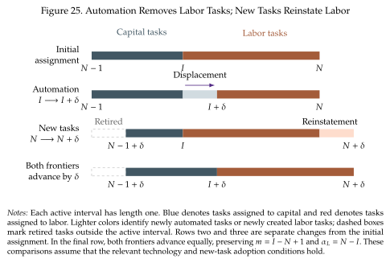

Automation, new tasks, and equilibrium wages¶
What happens when the automation frontier moves and more tasks are automated?
What happens when new tasks are created thanks to technological progress?
To answer this question we focus on the case in which the automation frontier is binding, \(I=\overline I<\widetilde I\). That is, we would like to automate more tasks but the technology just is not there yet for us to do it. Then, we consider an expansion in the automation frontier (\(\overline{I}\uparrow\)). This expansion leads to more tasks being automated. We are holding capital \((K)\) and labor \((L)\) fixed and looking at what happens to output and wages.
Automation increases output¶
Hold \(K\), \(L\), \(N\), and the labor-productivity schedule \(a_L(i)\) fixed and increase \(I\). Since \(m=I-(N-1)\), we have \(\partial m/\partial I=1\) and \(\partial(1-m)/\partial I=-1\). Taking logs of (7.26) turns the product into three terms:
We differentiate each term in turn. Increasing \(I\) removes tasks from the bottom of labor's interval, so differentiating the integral with respect to its lower limit gives
For the capital term, the product rule gives
For the labor term, remember that \(1-m\) falls as \(I\) rises:
Adding the three derivatives gives us
We can go further by connecting the change in output to the cost savings coming from automation. To do this, we use the factor-price formulas in (7.27):
Because \(a_K(i)=1\), capital's unit cost at the marginal task is \(r\), while labor's unit cost is \(w/a_L(I)\). We can therefore write the output response as the log ratio of the old labor cost to the new machine cost:
We know machines would be cheaper if they were available, \(r<w/a_L(I)\), because the technological frontier is binding, \(I=\overline I<\widetilde I\),. Expanding the frontier makes this cheaper technique available, so the log cost saving and the output gain are positive. The larger the cost advantage of machines at the newly automated task, the larger the gain. Output rises even though total capital and labor are fixed, because the economy can produce the newly automated tasks with a cheaper technique and reallocate its inputs.
What happens to the wage?¶
Taking logs of \(w=(N-I)Y/L\) gives
The two terms have opposite signs. Higher output increases demand for the services that workers still perform. However, the same workers must now be employed in fewer tasks. At each remaining task, the additional labor runs into diminishing returns in final-good production. This puts downward pressure on the marginal product of labor.
The same decomposition follows from the definition of the labor share, \(\alpha_L=wL/(PY)\). For homogeneous labor, rearranging and taking log changes gives
A falling labor share can therefore coexist with a rising real wage if output per worker rises enough to offset the decline in the share. In the race model, \(P=1\) and \(L\) is fixed, so automation raises output per worker at rate \(g_I\) while lowering the log labor share at rate \(1/(N-I)\). These are precisely the two terms in (7.31).
A small cost advantage for the new machine gives a small \(g_I\). In that case the displacement term dominates and the equilibrium wage falls, even though output rises. This supplies the channel missing from the capital-augmenting CES experiment in Section 3.3.
What happens to the labor share?¶
It decreases unambiguously with automation, as does the relative price of labor:
New tasks reinstate labor¶
Now hold the automation frontier fixed and increase \(N\). For now, this increase is given: we first establish its effects, then discuss the incentives to create the new tasks. New tasks move the interval of tasks being performed. An interval of old machine tasks disappears at \(N-1\), while an equal interval of new labor tasks enters at \(N\). Labor's bundle becomes longer, and \(m\) falls. This is the reinstatement effect of new tasks.

Figure 25 shows the two changes in the technological frontiers separately and together. Automation moves the boundary inside the existing task interval. New-task creation shifts the interval itself. Advancing both frontiers by the same amount preserves the lengths of the capital and labor bundles, even though the activities performed by each input change.
New tasks are the most productive, they expand the limits of what we can do. Accordingly, we assume that the adoption of these new tasks increases productivity (or reduces costs) relative to what we lose from the tasks that disappear at the bottom of the interval. We see this in the effective cost of the new tasks relative to the old tasks:
The new labor task is cheaper than the old machine task it replaces. Combining this condition with the condition for automation at \(I\) gives
Labor is relatively unproductive in the tasks being automated and relatively productive in the new tasks being created.
Differentiate (7.26) with respect to \(N\), using \(\partial m/\partial N=-1\):
The associated wage and share responses are
Both effects now favor labor: workers have more tasks to perform, and the new tasks increase the value of production.
The race between the two frontiers¶
Combining the two changes gives
Automation running ahead of new-task creation lowers the labor share. New-task creation running ahead raises it. Wages add to this the positive productivity effect of moving either technological frontier.
What makes the new-task frontier expand¶
An increase in \(N\) requires research that develops a productive new activity or an improved version of an existing one in which labor has a comparative advantage. In practice, some of the resources of the economy go to research that develops these new modes of production. Researchers can choose between developing automation technologies and creating new tasks. The make this choice based on the prospective profits they receive from the property rights over these new technologies (like patents or the creation of new firms). Three forces determine how much research is directed toward expanding \(N\):
- The productive advantage of the new task. new labor task is cheaper than the old machine task it replaces \((w/a_L(N)<r)\). The higher this productivity gain, the higher the incentive to move this frontier.
- Research capacity and technical difficulty. Technology also determines how easy it is for researchers to move each frontier. The new-task frontier advances faster when more researchers work on it or when each researcher can develop more new tasks. A scientific advance that makes automation easier can instead attract researchers away from new-task creation. The two directions of innovation therefore compete for research resources.
- Expected returns relative to automation. Research allocation depends on the present discounted value of profits an innovation can earn. Expected future wages and rental rates matter because they determine how attractive each technology will remain after it is developed. Intellectual property arrangements also matter for how much of the gain inventors can capture. A socially useful new task need not offer the highest private return to research.
These incentives create a feedback from the allocation of tasks to the direction of innovation. In our fixed-\(K/L\) comparison, automation lowers \(w/r\), narrowing the advantage of replacing workers and widening the advantage of productive new labor tasks. So, a temporary lead by automation shifts research incentives back toward new-task creation and supports a stable path on which both frontiers advance together. However, a permanent improvement in automation research can lead to a path with a lower labor share, and sufficiently cheap capital can lead to complete automation. Thus the expansion of \(N\) depends on productive opportunities, research resources, and the rewards for developing labor-using technologies.